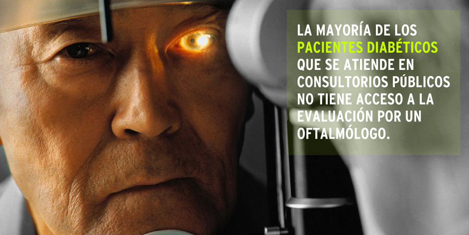
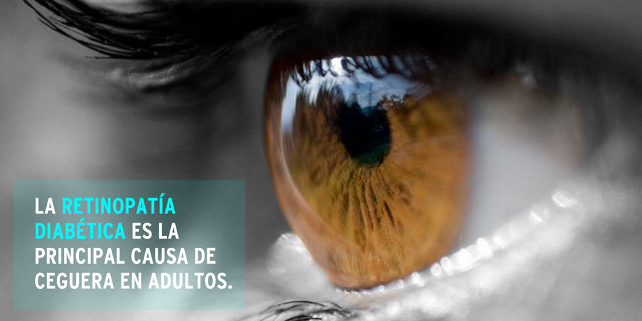
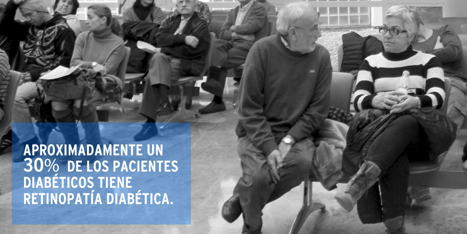

RetiDiag
(current)
Productos y Servicios
Prensa
Contacto
  
Como Nace RetiDiag
RetiDiag nace con el apoyo de CORFO bajo el concepto de emprendimiento social
a) El Problema en Chile:
b) La Solución
La retinopatía diabética es una complicación frecuente de la diabetes tanto tipo 1 como tipo 2. Consiste en el daño a los vasos sanguíneros de la retina que puede llegar a causar ceguera. De hecho es la principal causa de ceguera adquirida del adulto. Su detección y tratamiento oportuno permitiría reducir la ceguera por esta causa. El examen que permite la detección de la retinopatía diabética se llama fondo de ojo. Sin embargo, el acceso a este examen es limitado por la escasez de oftalmólogos; situación que se vuelve mas critica en las comunas de menos recursos, poblados alejados de las grandes ciudades y en consultorios o postas rurales. Aun cuando en algunos lugares se dispone de oftalmólogo, muchas veces no se logra cubrir la demanda de todos los diabéticos.
Hemos optimizado el proceso de detección oportuna del paciente con retinopatía diabética mediante el uso de un software desarrollado por nosotros y una nueva metodología de trabajo. Esto nos permite llegar al paciente diabético y lograr mayor cobertura sin tener aumento de los costos. Ofrecemos el servicio de examen de fondo de ojos mediante la utilización de cámaras no midriáticas y evaluación por telemedicina por un equipo médico que incluye oftalmólogo. Como resultado del proceso se entrega un informe PDF que contiene la fotografia de la retina del paciente.
Nuestros Productos y Servicios
pic
Opción 1: Dirigido a Consultorios sin UAPO
Nuestros tecnólogos médicos se dirigen al centro de salud (CESFAM, postas rurales) que lo requiera en cualquier punto del país a realizar retinografías que son almacenadas en nuestro sistema. Posteriormente son evaluadas y se envía al centro de salud un informe personalizado en dos formatos: Digital e Impreso.
Opción 2: Dirigido a Servicios de Salud que cuentan con una Red de UAPOs con Cámara no Midriaticas.
Nuestros profesionnales médicos evalúan las fotografías retínales a través de nuestra plataforma informática. Posteriormente se envían al centro de salud los informes personalizados.
Opción 3: Licencia de Uso del Software
Pensando para servicios de slaud y grandes hospitales que cuentan con sus propias cámaras no midriáticas y profesionales, que requieran aumentar la eficiencia del examen de fondo de ojos.
Prensa
Contacto
info@retidiag.com Hernando de Aguirre 128, Providencia